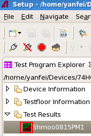

Opening the Shmoo Tool
About this task
Use the shmoo tool icon () to open the Shmo Tool.
The shmoo tool icon locates in the Test Results folder in the Test Program Explorer view. See the below picture:

Before you begin
Open SmarTest.
Procedures
To create a new shmoo file with opening the Shmoo Tool
- Right-click and select New.
- In the open window, enter a name for the new shmoo file.
- Click Finish.
The name beside changes to the name of the new file.
The new shmoo file is saved in <device directory>/shmoo.
- Double-click the icon, or right-click this icon and select Open.
To load an existing shmoo file with opening the Shmoo Tool
- Right-click and select Load.
- In the open window, select the desired shmoo file.
- Click OK.
The name beside changes to the name of the loaded file.
- Double-click , or right-click this icon and select Open.
Results
The Shmoo Tool displays in the SmarTest Work Center. See The interface of the Shmoo Tool.
What to do next
Set up shmoo tests and view shmoo plots with the Shmoo Tool. For details, see Using the Shmoo Tool.
Functional changes
- Introduced in SmarTest 7.2.0